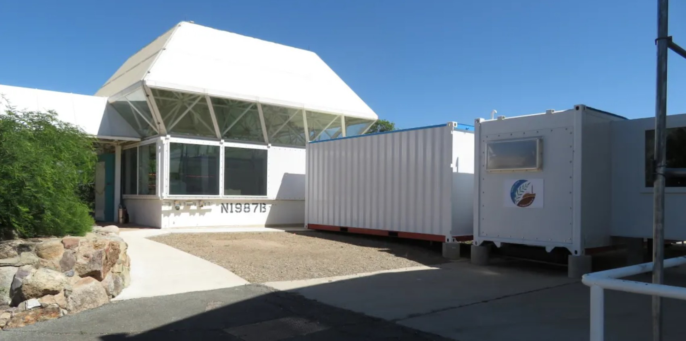
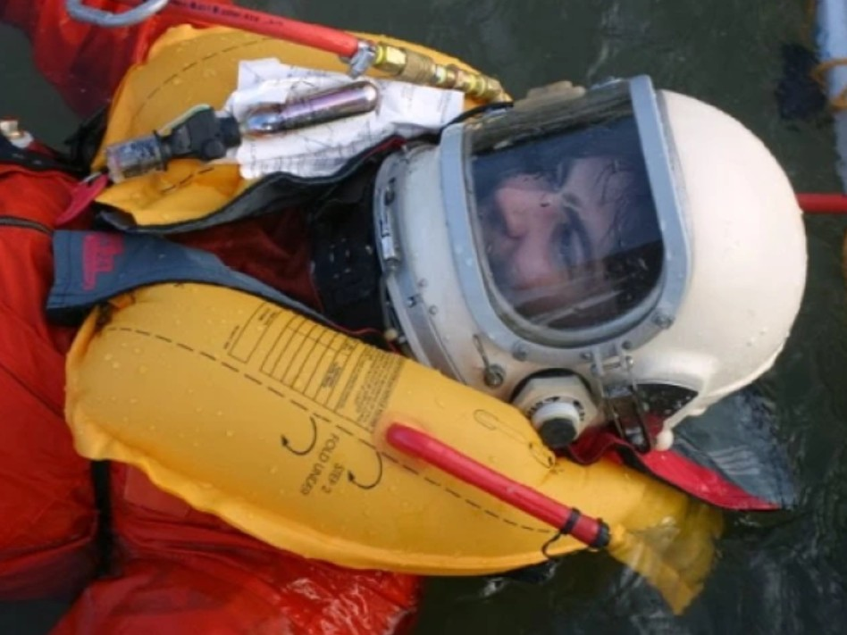

Research Initiatives
World-class environmental research across eight interconnected Earth systems, advancing solutions to humanity's grand challenges of climate change, biodiversity loss, and sustainable development.

Bridging Lab & Field
Biosphere 2 advances our understanding of natural and human-made ecosystems through integrated research and development of scalable interventions that increase the resilience and sustainability of Earth systems and human societies.
Our meso-scale ecosystems allow scientists to conduct experiments at a scale not possible in the laboratory, but with a level of control not possible in the field — bridging the critical gap between controlled lab studies and unpredictable real-world conditions.
Research Systems & Initiatives
From the world's largest enclosed tropical rainforest to a macrocosm experiment studying how landscapes evolve under climate change, Biosphere 2's research platforms enable science that simply cannot be done anywhere else.
 Ecosystem
Ecosystem
Tropical Rainforest
A 20,000 sq ft Amazon Basin model studying plant–water–gas interactions under controlled drought and climate stress.
Explore Research Marine
Marine
Ocean Reef Lab
The world's largest enclosed marine mesocosm — 2.6 million liters dedicated to coral reef resilience research.
Explore Research
Earth Critical Zone
Landscape Evolution Observatory
Three massive slopes studying how water, rock, microbes, and plants co-evolve under changing climate conditions.
Explore Research Ecosystem
Ecosystem
Coastal Fog Desert
An arid desert scrub ecosystem simulating coastal climates with erratic winter rainfall and summer drought.
Explore Research Ecosystem
Ecosystem
Mangrove Wetlands
Six interconnected estuarine sections modeling marsh and forested swamp communities dominated by mangrove trees.
Explore Research Ecosystem
Ecosystem
Savanna
A hydrological transition zone between desert and rainforest, modeling tropical savanna biodiversity and processes.
Explore Research Resilience
Resilience
Agrivoltaics
Food, water, and energy research exploring synergies between solar generation and agricultural production.
Explore Research
Beyond EarthSpace Analog for the Moon & Mars
Controlled-environment research and astronaut training in the SAM habitat — Biosphere 2's living legacy of space life science.
Explore Research
Space ExplorationCenter for Human Space Exploration
Spacesuit operations, spacecraft egress, and life-support systems R&D for the future of human spaceflight.
Explore ResearchResearch Infrastructure & Programs
Live Systems Data
Real-time and archived sensor streams from LEO, rainforest, ocean, weather station, and SCADA control systems.
Biosphere 2 Virtualization
Explore the facility as an interactive 3D research model with curated system briefs, field media, and live sensor context.
Research Directory
Meet the scientists, technologists, and staff operating Biosphere 2's research systems and supporting user projects.
User Facility
Biosphere 2 is open to researchers worldwide through a competitive, peer-reviewed proposal process.
Partnerships
Collaborations with Steward Observatory, LPL, Aegis Consortium, European Ecotron, iGLOBES, and more.
REU Program
A 10-week NSF-funded summer research experience for undergraduates in Earth and environmental science.
Strategic Plan
Five pillars guiding Biosphere 2's mission through 2030 — from sustainability research to tomorrow's leaders.
Legacy Data Archive
Historic systems data and documentation from earlier Biosphere 2 instrumentation, operations, and research campaigns.
Conduct Research at Biosphere 2
The Biosphere 2 laboratory offers eight research systems and world-class scientific staff to researchers from academia, industry, and institutes worldwide. Submit a research interest form to begin a proposal.